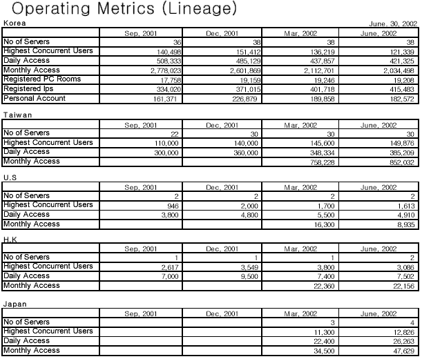

|
2002年8月13日
香港Lineage Snowball遊戲抄襲別人概念？
這消息是由玩家妖精Qoo發現的，在線上遊戲帝國的下載區第二頁最尾有一隻名為Snowcraft的日文遊戲，除了在圖像上有分別外，其玩法和香港的Lineage Snowball是一模一樣的！Snowcraft大約是在5月10日放上線上遊戲帝國供大家下載的，而Lineage Snowball則是在8月9日開始開放給玩家玩。因此究竟是Lineage Snowball抄襲Snowcraft的遊戲概念，還是"如有雷同，純粹巧合"呢？相信只有Lineage Snowball的設計者才會知道。
追加資料：鳴謝各位玩家提供資料，Snowcraft在兩三年前已經在互聯網流傳。
天堂各地區伺服器人數統計

NCSoft發表了2002年上半年投資者報告，當中有提及各地區伺服器數目，最大同時上線人數，每天登入帳號及每月登入帳號總數等資料。和上季一樣，台灣雖然比韓國的伺服器數目少，但卻擁有最大同線在線人數，可見台灣伺服器在繁忙時間是非常擠迫的。而香港雖然在4月20日加開了伺服器，但上線及登入人數卻沒有明顯進步，相信這和4月至6月的考試高鋒期有關，假如香港能在6月後才開新伺服器效果或許會更好。
另外，Lineage II大約會在2002年下半年開始Beta測試，大家可能在聖誕前便能試玩全新的Lineage遊戲！
PS: 每天登入本網的Unique IP比每天登入香港伺服器的帳號總數大約多2-3倍 ^^ |